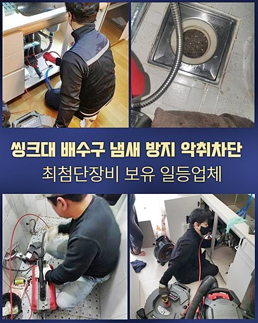
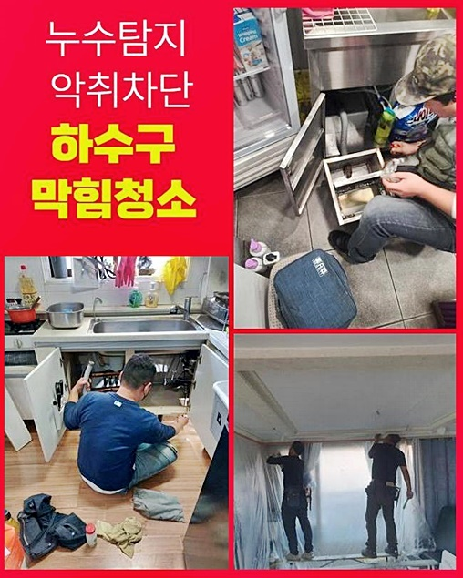
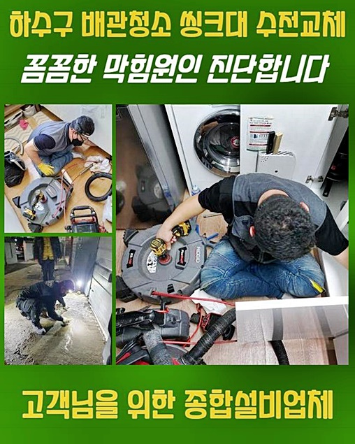
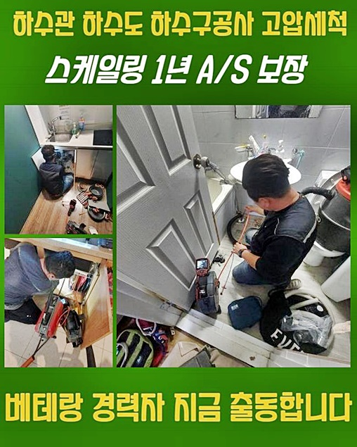
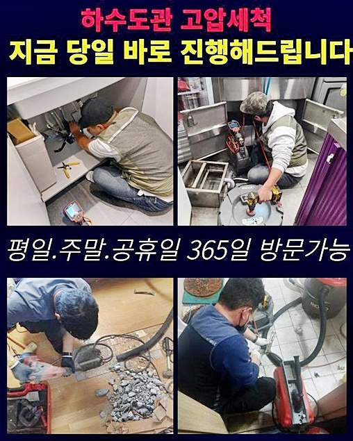
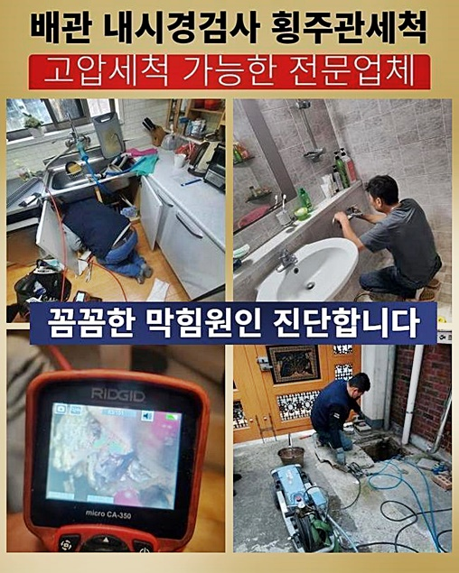
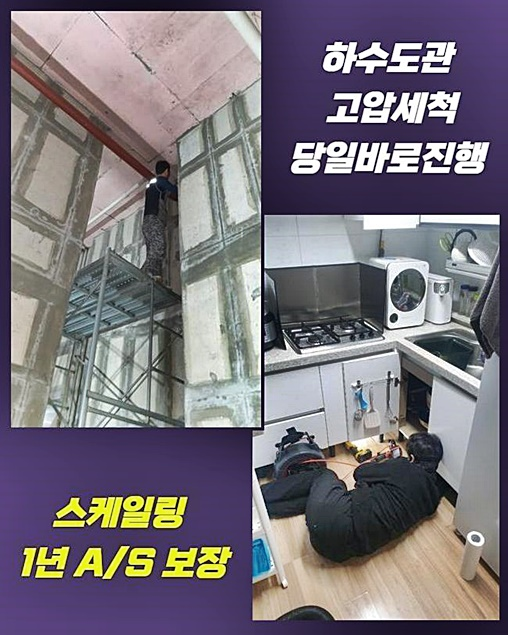

🏠 중랑구 묵동욕실뚫음 신내동 배관뚫기 설비
용인시 처인구 누수수리 전문 시공 후기

📋 작업 개요
- 위치: 용인시 처인구, 수원시 영통구, 화성시 동탄
- 서비스 유형: 누수수리, 고압세척, 내시경점검
- 작업 일시:
- 업체명: 하수구수사대 (010-5615-2118)
🔍 문제 상황
중랑구 묵동욕실뚫음 신내동 배관뚫기 설비
여러분 주목해주십시오 배관청소에 대한 이야기를 해드릴게요
배관은 물이 빠지는 처소입니다 게다가 면적이 작다는 특징이 있어요
만약에 순수한 액상만 유입된다면 별 트러블이 안 일어나겠으나 불찰 등으로 고형물이 혼합되면 갑갑한 파이프를 목도하는 경우가 많아요
특별하게 물티슈 뭉치나 기름때 등 여러 슬러지들이 들어가게 되면 파이프가 차단되곤 합니다 이럴땐 자체적으로 처치하기 힘겨운 형편이 많아요
파이프 안쪽은 외측에서 바라보기 힘겨운데요 노폐물들이 누적되어 겉면에 보일 때까진 간파해내기 힘겨워요
여러 재료들을 손질하는 개수대는 평상적으로 신경을 쓰지 않는다면 악취가 풍기거나 정체되는 상황이 빈번하게 터지는데요
가끔 음식물의 기름성분이 모이게 되면 간단히 처리하기 힙겹죠
이런 상황에서는 배관을 다루는 숙련자를 찾아 도움을 받는 게 좋아요
저희들은 느닷없이 발발한 배관차단 현상으로 손님께서 급박한 출장을 바라셔서 더욱 발걸음을 재촉하여 내방했는데요
의뢰인분의 요청상황에 호응하여 댁에 다다르면 저희들은 여러가지 기계와 경험을 써서 파이프를 잽싸게 수선하죠
일을 마치고 귀가 후에 편하게 휴식을 취하는 중에 갑자기 화장실 배수공이 차단되어 문의하셨다고 했어요
대부분의 사람들은 하수구가 고장나면 자체적으로 해결을 진행하려고 합니다
뚫어뻥 액상을 사용하거나 긴 막대를 활용하게 되는데요 그렇지만 하수관이 파손될 우려가 있어서 주의가 요망되는데요

🔎 원인 분석
💡 전문가 진단: 정밀 진단 장비를 사용하여 슬러지의 고착 여부를 판명하고 타격/세척 작업을 실시했습니다.
생각외로 하수관은 단단하지 않아 이차적인 충격으로 누수증세가 발발할 수 있죠
다양한 방법으로 고치려 도전하시다 잘 안되었기 때문에 하수관 세척을 전문적으로 하는 기술자를 알아보신거라고 하네요
이러한 사태가 왜 발발했는지 까닭을 알아내는 일에 주안점을 두어야 하겠죠? 적합한 장비들을 꾸리고 트러블이 터진 곳에 도달했어요
개별 사태에 근거하여 세정 순서가 상이하고 가동하는 공구들도 다릅니다
프로는 재빨리 동기를 관찰하고 알맞은 방안을 제시해야 해요
또 본격적인 공사를 실행하기에 앞서서 주변의 상황을 면밀하게 인지해야 해요
현장상황에 의거하여 석션장비를 일차적으로 이용해서 배수공 부근의 잔재들을 치우고 내시경촬영 기기를 삽입해 하수구 안을 관측하는 패턴도 존재해요
처소에 도달하여 순시해보니 역류가 일어나 방바닥이 축축해진 걸 알 수 있었죠
갑갑해하는 손님을 마주하니 매우 난감해졌답니다 훼손된 모습을 확인하니 전면적인 교환이 요망되는 모습이었어요 악취도 심했고요
따라서 집에서 조치하다가 제대로 되지 않아 시간만 보내신다면 심각한 비용적 손해를 발생시키는 경우도 많아 초기에 재민첩하게 고치는 게 마땅합니다
배수문의 상황을 지켜보니 찌꺼기들이 그득하여 배관카메라를 들여 보내기가 힘겹기에 우선적으로 석션기기를 통해 빨아들였어요
평상시 이용하는 관통기기가 존재하지만 역류가 발발하였을 시 고형물이 방해가 되어 석션기기를 쓰곤하죠
강력한 힘을 바탕으로 소제하기에 이물이 존재하는 지점에 타케팅을 잘 해야 합니다
해당 작업으로 겉 부분을 처치하고 배관카메라를 삽입해 진단을 해봤어요
내시경기계는 깊은 배관 안쪽을 즉각적으로 확인할 수 있는데요

🔧 작업 과정
까닭과 문제의 지점을 관찰하는데에 핵심적인 역할을 해줍니다
배관카메라를 넣고 안 상황을 파악하니 두꺼운 기름층이 고착화되어 있었죠
찌꺼기들이 엉켜서 하수관 중앙에 정체하여서 홀 크기가 점차 작아져 물흐름이 멈추고 넘치는 상황까지 이르게 된거죠
주범은 기름때라고 볼 수 있었어요
하수관은 여러가지의 폐수가 들어가기에 물에 잘 풀리지 않는 것들도 받아들이게 되는데요
그렇기에 침전물들이 장시간 누적을 하게 되어 파이프를 막아버리는 상황이 빈번하게 나타납니다
평상적으로 말썽을 방지하기 위해 배수관련 점검을 통해 정상인지 시험을 진행하는 것을 권장해요
배수관 내측에 기름때가 너무 많아서 첨단 기기를 통해 해소하려 계획을 세웠습니다
플렉스샤프트 기기와 드릴류를 이용해서 배수관 소제를 하였답니다
플렉스샤프트 기계는 배관에 오래 체류한 이물들을 쇄소하고 끈끈하게 붙어있는 것들에도 이용할 수가 있습니다
강인한 드릴류로 청소하기 때문에 굳어진 이물들까지도 명확하게 마무리할 수 있답니다
그러나 고전압으로 돌리는 것이므로 기술자가 아니면 하수관을 훼손을 만들 수도 있어요
이렇기에 기술장비를 활용할 시엔 관련 전문가가 앞장서야 하는거죠
샤프트기기를 통해서 기름때 등을 자그맣게 파쇄하고 있습니다
다행스럽게도 일부분에만 각종 기름덩이들이 집중되어 있었고 타 공간은 깔끔한 모양새라 예상보다 배수구 세척 공정을 빨리 진행할 수 있었어요
지속하여 내시경설비를 통해 파이프 내측을 관찰하면서 플렉스샤프트로 빈틈없이 세정하였더니 점진적으로 청결하게 변하는 모양새가 확인되었답니다
이상없는지 점검하기 위하여 내시경설비를 삽입하였답니다
화면을 통해서 확인하니 조금 전에 배수관을 방색하게 하였던 찌꺼기들이 현재는 없어져 깔끔한 관 내부를 목도하게 되었답니다
최후적으로 배수가 잘 되는지 점검에 들어갑니다
일거에 수돗물을 많이 들이부었는데 신속히 사라지는 것을 알게 되었어요
개수대 하부의 물이 넘쳤던 지점도 체크해가며 물내림을 하였던 것인데 금시 문제없이 제대로 빠지는 걸 확인하고 완료하게 되었죠
진단과정에서 손님께 트러블이 없어졌다는 걸 바로 볼 수 있도록 조치했답니다
우리가 진행한 본 시공에서 보셨던 것과 유사하게 물흐름 정체로 물넘침까지 유발되는 사안 대개가 관 내측이 고장난 것이 원인이라 설명드릴 수 있습니다


✅ 작업 완료
이런 정체들은 회피하기 힘겨운 장애입니다
이런 고장에 처하게 된다면 바로바로 관련업자의 조력으로 조치를 받아보셔야 합니다
그래야지 일상의 불편을 막을 수가 있어요
영별히 기름찌꺼기로 답답한 정체가 생겼다면 능숙한 기술을 가진 기술자에게 의뢰하여 고장을 해소하실 걸 권장합니다
차후 비용 부분까지 따진 길이라고 확신합니다
아무때나 연락만 주신다면 신속히 출장가겠습니다




⚠️ 하수구 배관 막힘 예방 및 관리 가이드
- ✅ 머리카락, 비닐, 물티슈 등 물에 분해되지 않는 이물질은 절대 흘려보내지 마세요.
- ✅ 기름기 많은 식기는 설거지 전 키친타올로 먼저 기름때를 닦아내세요.
- ✅ 주기적으로 배수구에 뜨거운 물을 가득 부어주어 유지방 고착을 방지하세요.
- ✅ 작업 후 1년 이내 재발 시 무상 A/S 보증 서비스를 제공합니다.
💡 핵심 정리
- 확실한 장비 작업(내시경 점검 및 샤프트 스케일링)으로 원인을 뿌리 뽑습니다.
- 작업 후 1년 이내에 동일한 부위 재발 시 100% 무상 A/S 서비스를 보장합니다.
- 서울 · 경기 · 인천 전 지역에 24시간 언제든 긴급 출동할 수 있도록 항시 대기 중입니다.
❓ 자주 묻는 질문 (FAQ)
🚨 용인시 처인구 누수수리 문제로 고민이신가요?
정확한 원인 진단과 확실한 시공으로 재발 없는 해결을 약속드립니다.
24시간 긴급 출동 | 서울 · 경기 · 인천 전지역 | 1년 내 재발 시 무상 A/S